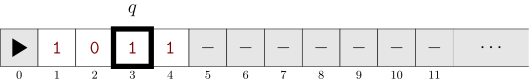
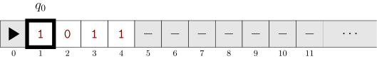

23 Turing Machines
% noend hides “end for”; drop it to keep them
Finite automata are a good model for machines that have access to a small amount of memory, PDAs for machines that have access to an unlimited memory but in the form of a stack. We also saw limitations of those devices.
In this chapter we develop the model we use for a general purpouse computer: the Turing machine.
The content of this part is still under development and will be updated during the course.

A Turing machine (somewhat informally) is a finite states machine with an initial state q_{0}, two halting states q_{\mathrm{accept}} and q_{\mathrm{reject}}. The machine apart from its states has reading/writing access to a tape and has transitions of the form
The intended meaning of such transition is
When in state q, if the head on the tape is in a cell with symbol \textcolor{darkred}{\mathtt{s}}, substitute it with \textcolor{darkred}{\mathtt{t}}, move the head to the Right and go to state q'.
Similarly, a transition of the form q,\textcolor{darkred}{\mathtt{s}}\to q',\textcolor{darkred}{\mathtt{t}}, L would be the same as before but now the head moves to the Left, and a transition of the form q,\textcolor{darkred}{\mathtt{s}}\to q',\textcolor{darkred}{\mathtt{t}}, S would be the same as before but now the head does not move.
Definition 23.1 A configuration is a triple (q,t,\ell) where
- q\in Q is a state;
- t\colon \mathbb{N}\to \Gamma is a function representing the content of the tape (by convention t[0]=\blacktriangleright);
- \ell\in \mathbb{N} is the head location.
Example 23.1 We represent configurations visually as in Figure 23.2.

The configuration in the figure above has the tape containing the word \textcolor{darkred}{\mathtt{1011}}, the head of the machine is in position 3 and the machine is in state q.
At the beginning of the computation the machine is in its start configuration: the machine is in the initial state q_0, the head is on the cell 1, the input to the machine is written on the tape in the leftmost consecutive cells. That is between \blacktriangleright and the first empty cell, a cell containing -.
Given two configurations C=(q,t,\ell) and D=(q',t',\ell') we say that C yields D (denoted as C\vdash_M D) if either
- the machine has the transition q,\textcolor{darkred}{\mathtt{s}}\to q',\textcolor{darkred}{\mathtt{t}}, R and t[\ell]=\textcolor{darkred}{\mathtt{s}}, \ell'=\ell+1 and t' is the same function as t except for t'[\ell]=\textcolor{darkred}{\mathtt{t}}; or
- the machine has the transition q,\textcolor{darkred}{\mathtt{s}}\to q',\textcolor{darkred}{\mathtt{t}}, L and t[\ell]=\textcolor{darkred}{\mathtt{s}}, \ell'=\ell-1 and t' is the same function as t except for t'[\ell]=\textcolor{darkred}{\mathtt{t}}; or
- the machine has the transition q,\textcolor{darkred}{\mathtt{s}}\to q',\textcolor{darkred}{\mathtt{t}}, S and t[\ell]=\textcolor{darkred}{\mathtt{s}}, \ell'=\ell and t' is the same function as t except for t'[\ell]=\textcolor{darkred}{\mathtt{t}}.
A configuration is accepting if the state of the configuration is q_{\mathrm{accept}}, and, similarly, a configuration is rejecting if the state of the configuration is q_{\mathrm{reject}}. A configuration is halting if it does not yield further configurations. Both q_{\mathrm{accept}} and q_{\mathrm{reject}} are halting configurations by definition.

For example, Figure 23.3, corresponds to a TM starting the execution on input \textcolor{darkred}{\mathtt{1011}}.
Definition 23.2 (Turing machine) A (1-tape deterministic) Turing machine is a tuple M=(Q,\Sigma,\Gamma,\delta,q_0,q_{\mathrm{accept}},q_{\mathrm{reject}}) s.t.
- Q is a finite set (the set of states;)
- q_0,q_{\mathrm{accept}},q_{\mathrm{reject}}\in Q with q_{\mathrm{accept}}\neq q_{\mathrm{reject}} (resp. the initial, accepting, and rejecting states);
- \Sigma is an alphabet and \Gamma\supseteq \Sigma\cup\{\blacktriangleright, -\} is also an alphabet (\Sigma is the input alphabet and \Gamma the tape alphabet)1;
- \delta\colon Q\times \Gamma \to Q\times \Gamma \times \{L,R,S\} (the transition function).
Definition 23.3 (\mathscr{L}(M)) The language accepted by a Turing machine M=(Q,\Sigma,\Gamma,\delta,q_0,q_{\mathrm{accept}},q_{\mathrm{reject}}) is the set \mathscr{L}(M) of all words w\in \Sigma^* s.t. there exists a sequence of configurations C_1,\dots,C_k s.t.
- C_1 is the start configuration of M on input w;
- for each i<k, C_i\vdash_M C_{i+1}, that is the machine can go from configuration C_i to configuration C_{i+1} in one step;
- C_k is an accepting configuration.
Given a Turing machine M and an input x, there are thre possibilities for the behaviour of M(x) (M on input x):
- the computation halts (M(x)\!\downarrow) and accepts;
- the computation halts (M(x)\!\downarrow) and rejects;
- the computation does no halt (M(x)\!\uparrow).
23.1 TMs as a “programming language”
A Turing machine is a very low-level programming language. If you look at its transition table the right way, it is an assembly program with goto:
- the states are the program points (the “line numbers” or labels);
- a transition
q a -> p b Dsays: “at labelq, if you reada, writeb, moveD, thengoto p”; - the tape is the memory.
High-level languages are compiled down to gotos, and we can do the same with Turing machines.
In this section we show how to implement the basic constructs of pseudo-code: sequential composition, if-then-else, while and for loops, variables and subroutines. Once that is done, we can describe Turing machines by pseudo-code and trust that a transition table could be written if needed.
We use the same notation as before: > is the left-end marker, _ is the blank, and moves are L, R, S (stay). A missing transition means reject.
To keep tables short, we use a wildcard: * stands for “any symbol not handled by another rule for that state”, and writing * on both sides means “write back the same symbol”. So
r * -> r * Ris an abbreviation for one transition r a -> r a R for every tape symbol a.
To compose machines, we stop thinking of a TM as something that accepts or rejects, and instead think of it as a block of code:
Definition 23.4 (Block) A block is a Turing machine fragment with
- one entry state (where control enters), and
- one or more exit states (where control leaves), which have no outgoing transitions inside the block.
An ordinary TM is just a block whose exit states are q_{\mathrm{accept}} and q_{\mathrm{reject}}. Blocks with two exits, say yes and no, are tests: they play the role of Boolean conditions.
Two blocks used together must have disjoint sets of state names; if they don’t, we rename states (for instance by adding a prefix, q_{A,0}, q_{B,0}, …). Renaming states does not change what a block does.
Throughout, we draw blocks as boxes:
23.1.1 Sequential composition: M1 ; M2
To run M1 and then M2: identify the exit state of M1 with the entry state of M2.
Example 23.2 Let’s see for example an implementation of “go to the right end, then come back to the left end” Block GoRight (entry r, exit rdone):
r * -> r * R
r _ -> rdone _ L # last symbol of the wordBlock GoLeft (entry l, exit ldone):
l * -> l * L
l > -> ldone > R # first symbol of the wordGoRight ; GoLeft is obtained by renaming rdone to l:
r * -> r * R
r _ -> l _ L
l * -> l * L
l > -> ldone > RThe only thing to watch is that M2 must work correctly starting from wherever M1 left the head. This is the TM version of a precondition. In practice, many blocks are written to start and end with the head on the first symbol of the word, so they can be chained freely.
23.1.2 Conditionals: if T then M1 else M2
Let T be a test with exits yes and no. To build the conditional:
- identify
yeswith the entry ofM1; - identify
nowith the entry ofM2; - identify the exits of
M1andM2with a common exit state.
Example 23.3 Let’s see a way to implement “if the current symbol is 0 then write 1 else write 0” (flip a bit) The test only looks at the current cell and does not move:
t 0 -> yes 0 S
t 1 -> no 1 SThen and else branches:
yes 0 -> done 1 S
no 1 -> done 0 SAfter simplifying (a test followed immediately by a write can be merged into one transition), we get the expected one-state machine:
t 0 -> done 1 S
t 1 -> done 0 SConditions can be more complicated than “what symbol is under the head”: a test can be any block with two exits, e.g. “is the word a palindrome?”. The one rule is that a test should leave the tape in a known state (typically: content unchanged, head back where it started), so that both branches know what they start from.
23.1.3 While loops: while T do B
Identify:
yeswith the entry ofB;- the exit of
Bwith the entry ofT(this is the “jump back”); nowith the exit of the loop.
Example 23.4 Let’s implement the following “while the current symbol is not >, move left” Test (does not move):
w > -> no > S
w * -> yes * SBody (one step left, then jump back to the test):
yes * -> w * LMerging test and body gives exactly the GoLeft block we already saw:
w * -> w * L
w > -> no > SSo the “go back to the left end” loops found in almost every TM are while loops. Note that a while loop can run forever: this is precisely how Turing machines can fail to halt.
23.1.4 Variables
If a variable can only take values from a finite set V (a Boolean flag, a counter modulo 3, the last symbol read, …), we can store it in the finite control: replace each state q by the pairs (q, v) with v \in V. This multiplies the number of states by |V|, which is still finite.
Variables whose values are unbounded (numbers, words) are stored on the tape. Two standard layouts:
- Several tapes. A k-tape TM has one tape per variable; each transition reads and writes k symbols and moves k heads. One can prove that every k-tape TM can be simulated by a 1-tape TM (with a quadratic slowdown), so using several tapes does not change what is computable.
- Separators. On a single tape, store the variables one after another, separated by a fresh symbol:
\blacktriangleright\; x_1 \;\textcolor{darkred}{\mathtt{\#}}\; x_2 \;\textcolor{darkred}{\mathtt{\#}}\; \cdots \;\textcolor{darkred}{\mathtt{\#}}\; x_k \;\texttt{\_} To “access x_i”, go to the left end and skip i-1 separators \textcolor{darkred}{\mathtt{\#}}.
With variables on the tape, the usual operations become blocks: copy x := y, increment x := x + 1 (the binary increment machine), compare x = y (a test), and so on.
23.1.5 For loops: for i = 1 to n do B
A for loop is a while loop over a counter stored on the tape. The simplest version uses a unary counter: the tape is \texttt{>}\,1^n\,\texttt{\#}\,w, and each iteration crosses off one 1.
for each 1 in the counter:
cross it off
run BAs a while loop: while there is an uncrossed 1 in the counter, cross it off, run B, go back to the left end.
Example 23.5 Let’s see for example a loop control around a body B We assume that B has entry B.start and exit B.done, does not modify the counter, and does not need the head in any particular place when it starts.
c x -> c x R # skip the 1s already crossed off
c 1 -> B.start x S # cross off one 1, then run the body
c # -> exit # S # no 1 left: the loop is over
# ... the transitions of B, from B.start to B.done ...
B.done * -> back * L # after the body: go back to the left end
back * -> back * L
back > -> c > R # and test againWith a binary counter, use the same scheme with the test “is the counter 0?” and the body “decrement the counter; run B”. The decrement machine is the mirror image of the binary increment machine.
Unlike a while loop, a for loop always terminates provided its body does, because the counter strictly decreases.
23.1.6 Subroutines
A subroutine call is handled like a macro: we paste a fresh copy of the subroutine’s block (with renamed states) at each call site, and wire it in with sequential composition.
This works because a program has only finitely many call sites, so the result still has finitely many states.
Pasting copies does not work for recursive subroutines, since that would produce infinitely many copies. Recursion needs an explicit stack stored on the tape (for example on an extra tape), exactly like a compiler implements recursion with a call stack in memory. This is possible, but tedious, and we will not need it.
We assume \blacktriangleright and - are not part of the \Sigma.↩︎